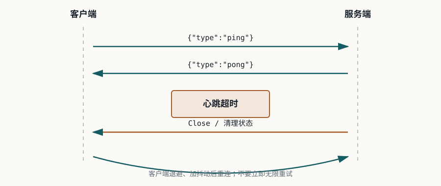

Lesson 0006 · Reliability
心跳、断线和安全边界
本课的唯一目标：识别连接是否仍然可用，处理断线后的重连，并区分 Origin 校验和身份认证。
examples/0006-heartbeat-reconnect-security。它使用 Java 25 + Spring Boot 4.1.1，包含一个本地浏览器页面、服务端应用心跳和开发环境握手令牌。
1. 三种“保活”不是一回事

| 机制 | 所在层 | 能回答什么问题 |
|---|---|---|
| WebSocket Ping/Pong | 协议控制帧 | 对端 WebSocket 栈是否仍能响应。 |
| 业务心跳 | 应用层消息 | 应用进程、会话和业务链路是否仍能处理消息。 |
| TCP keepalive | 传输层 | 网络连接路径是否仍有响应，不代表应用逻辑健康。 |
| 代理 idle timeout | 基础设施 | 网关是否因一段时间没有流量主动关闭连接。 |
浏览器 JavaScript WebSocket API 通常不能直接发送协议级 Ping，所以示例使用 {"type":"ping"} 作为应用心跳。应用心跳能覆盖更多业务路径，但也需要定义超时、消息格式和资源成本。
2. 源码导读：从握手到心跳
WebSocketConfig
├─ /ws/heartbeat
├─ Origin = http://localhost:8080
└─ DevTokenHandshakeInterceptor
↓ 握手通过
HeartbeatWebSocketHandler
├─ afterConnectionEstablished → 记录 session / lastActivity
├─ handleTextMessage → ping → pong
├─ closeIdleSessions → 超时 Close + 清理
└─ afterConnectionClosed → 删除状态
握手拦截器只决定连接能否升级；它不处理之后的消息授权。Handler维护活动时间和消息心跳，但示例中的内存状态只适用于单实例学习环境。
浏览器页面在关闭后使用指数退避和随机抖动重连。抖动的目的，是避免大量客户端同时恢复时形成重连风暴。
3. Origin 不等于身份认证
Origin 说明浏览器页面来自哪个来源，适合限制哪些网页可以发起跨站 WebSocket 连接；它不能说明用户是谁，也不能替代授权检查。
示例额外要求查询参数 token=local-dev-token，只是为了让浏览器页面可运行。真实系统应考虑安全 Cookie、短期连接票据、Authorization 代理方案和服务端授权。查询参数可能进入访问日志、代理日志和浏览器历史，不应直接放长期凭证。
4. 运行和验证
cd examples/0006-heartbeat-reconnect-security mvn test mvn spring-boot:run
- 打开
http://localhost:8080/，点击 Connect。 - 观察页面日志，每 5 秒出现一组 ping/pong。
- 停止服务端，观察 close 和退避重连日志。
- 恢复服务端，确认连接最终重新建立。
- 在 DevTools 中删除 token 或从不可信 Origin 发起请求，观察握手被拒绝。
5. 失败案例
| 现象 | 优先检查 |
|---|---|
| 连接刚建立就被拒绝 | 检查 Origin、token、握手拦截器和响应状态。 |
| 服务端认为客户端在线，但消息已无法到达 | 检查应用心跳、代理 idle timeout 和最后活动时间。 |
| 服务恢复后大量客户端同时请求 | 检查重连是否有指数退避、随机抖动和上限。 |
| 断开后在线人数不下降 | 检查底层关闭回调是否清理 session 状态，不能只依赖 Close 帧。 |
6. 练习：先回忆，再验证
运行示例后回答下面 4 个问题：
-
为什么同时需要心跳超时和底层连接关闭回调？
查看答案
正常关闭可能触发回调，但断网、进程崩溃或代理异常未必完成 Close 握手；心跳超时提供最终判定，关闭回调负责及时清理已知的断开连接。
-
为什么 Origin 校验不能替代身份认证？
查看答案
Origin 只描述浏览器页面来源，不证明用户身份、权限或租户。服务端仍需要 Cookie、短期票据或其他认证机制，并在业务操作上做授权检查。
-
为什么重连需要退避和抖动？
查看答案
服务故障时客户端可能同时断开；立即重连会形成重连风暴，进一步压垮服务。退避降低频率，抖动打散同一时刻的请求。
-
为什么示例中的查询参数 token 不能直接作为生产方案？
查看答案
查询参数可能出现在 URL、代理日志和访问日志中，长期凭证容易泄露。生产环境应使用安全 Cookie、短期连接票据或经过设计的 Authorization 方案。
快速检查：Origin 校验主要解决什么问题？